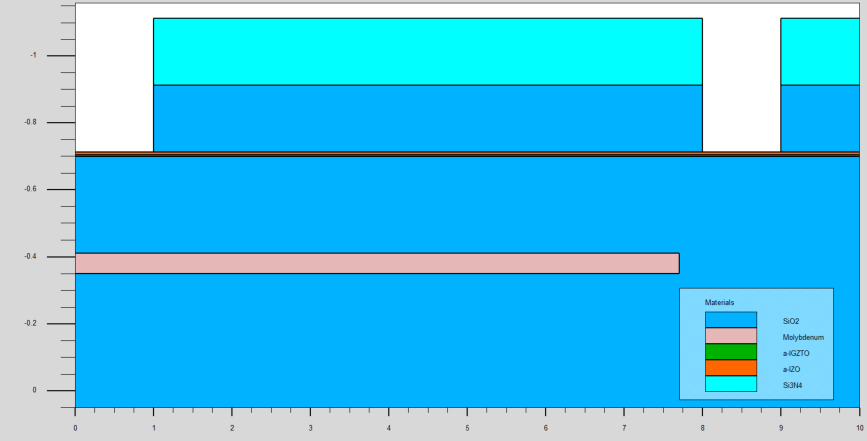
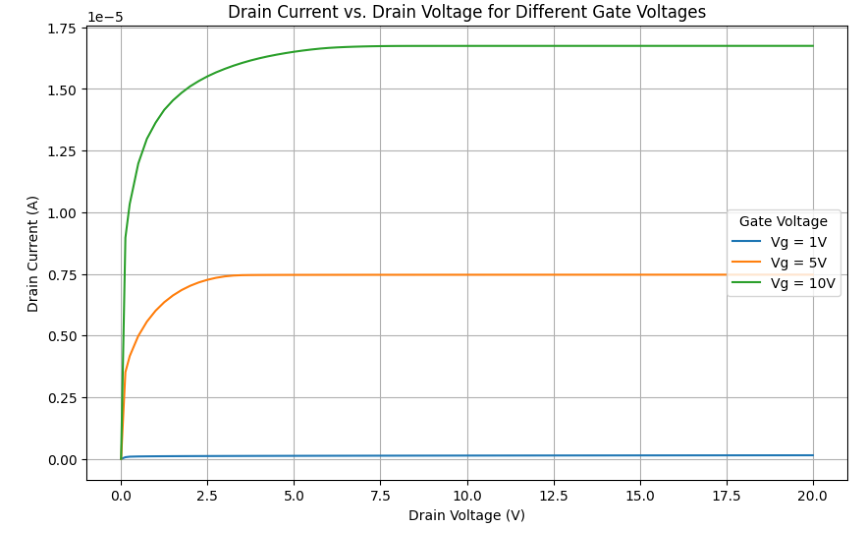
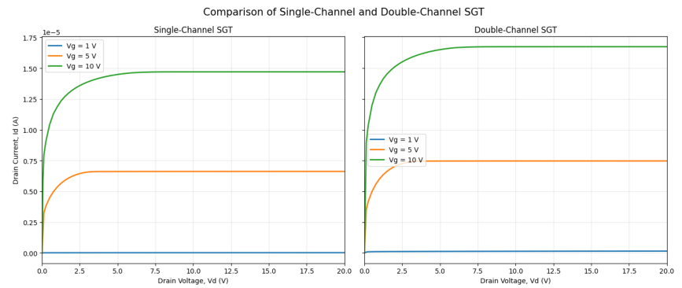
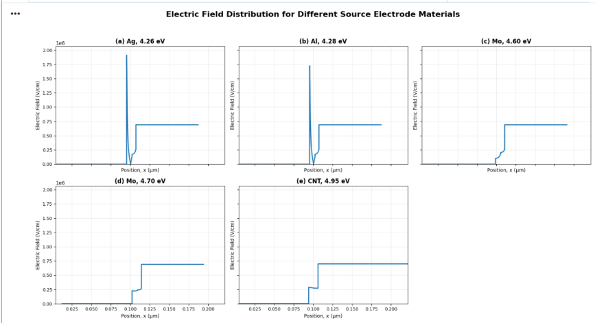
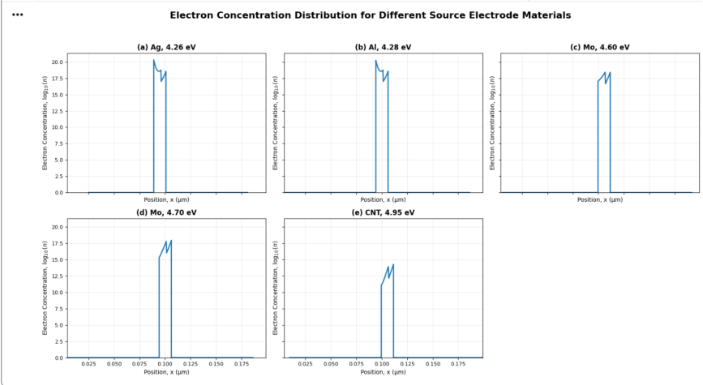

Exploring how device architecture
shapes electrical performance.
Undergraduate research at Advanced Semiconductor Devices Lab, Islamic University of Technology, beginning September 2024.
A Study on Double-Channel Metal-Oxide Based Source-Gated Thin Film Transistor
Conducted collaborative undergraduate thesis research at the Advanced Semiconductor Devices Lab (ASDL), Islamic University of Technology (IUT), beginning in September 2024. The study investigates a double-channel metal-oxide source-gated thin-film transistor (TFT), comparing its simulated electrical characteristics with a single-channel structure.
Research objectives: Develop and evaluate a double-channel device structure; investigate the effects of source electrode work function and channel configuration on output and transfer characteristics; and examine electric-field and carrier-concentration behavior in the source region.
Methodology: Developed process and device structures in Silvaco ATHENA and performed device-level simulations in Silvaco ATLAS. Conducted parameter variation and optimization studies, electrical characterization, and comparative analysis of single- and double-channel devices. Used Python for simulation-data processing, comparative plots and visualization to support interpretation of device behavior.
Technical skills: Silvaco ATHENA, Silvaco ATLAS, TCAD device-structure development, parameter optimization, output/transfer characterization, comparative device analysis, Python data processing and visualization.
A closer look at the device
Original figures cropped from the collaboratively authored thesis; captions reflect the corresponding thesis figures.




